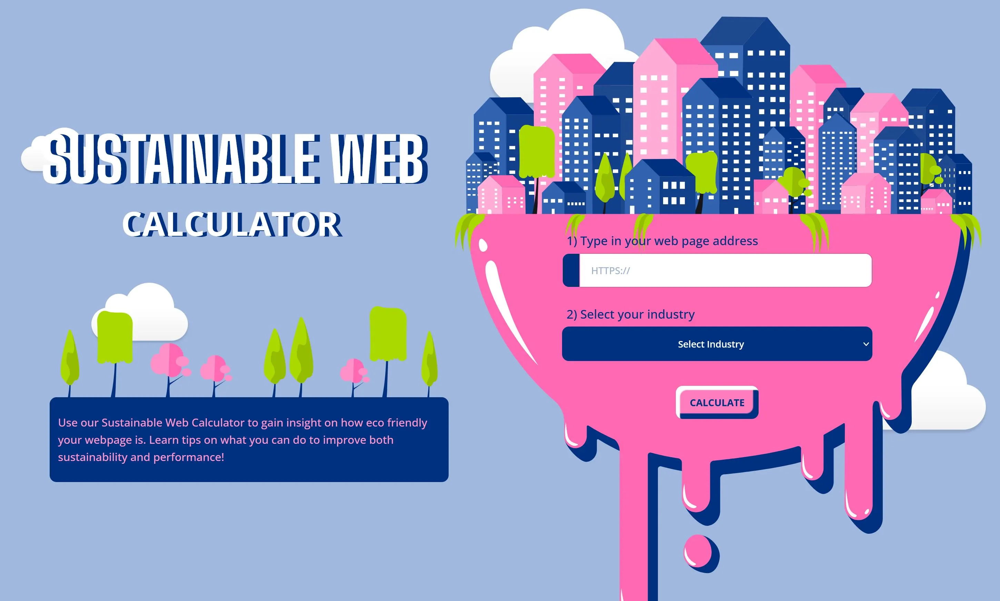
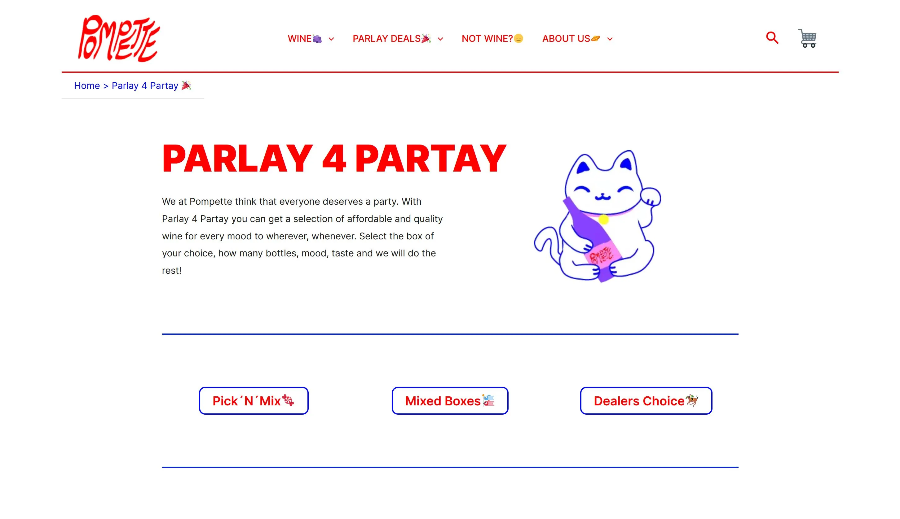
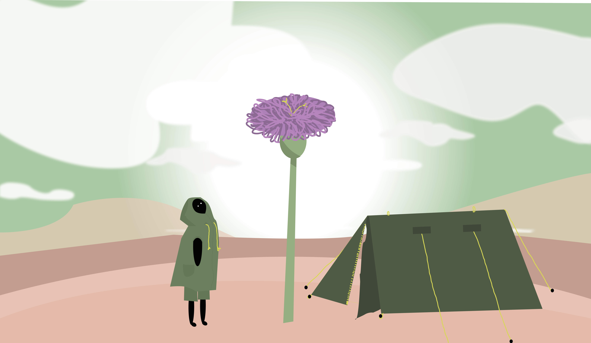
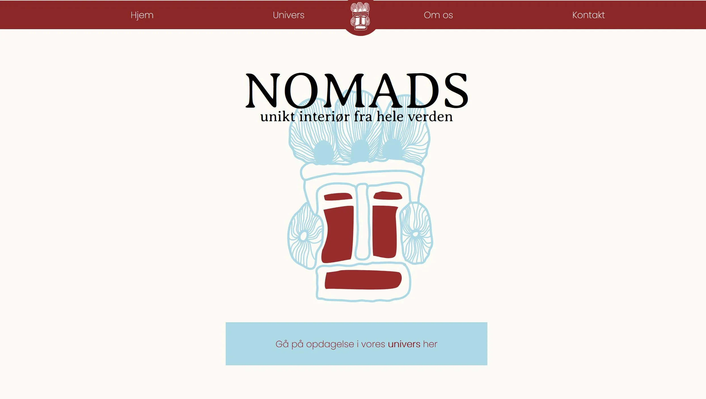

Client pitch Advice

API, Modules and forms
On my third semester (Front End) we had to make a protoype for the company Advice. They
wanted a website they could show clients their carbon footprint. For this we used an API key
and endpoint for storage of the data in our own datasystem. The project is not responsive,
so works only on desktop. It is programmed so its possible to type any URL, but since the
API gave everyones projects problems, it was decided to use a stored URL and data. For this
it is Facebook.
Prototype
Examproject 2.S

Rebranding, dynamic content and wordpress
For this exam project we had to find a client (start-up) and rebrand their website. Our
client was the wine bar Pompette. We used Wordpress for the primary styling and css for the
dynamic content.
Website
UX course
Xd prototype and stilpitch
On my first semester we had to design a prototype for a webshop that sells t-shirts. We had
to come up with our own concept, create a tagline, find a USP and create microcopy to stand
out for competitors. My concept was to create a platform for local artists to sell their art
on a printed t-shirt. To stand out for other like minded companies, the idea was to have one
artist to sell 5 printed t-shirts every month and the website would be designed so it was
fitted to the artist. For the prototype I used my own art and prints I have been selling
myself.
Prototype
Animation

Website with simple game
On my first semester I had to develop a resposnive website with a game. All the illustrations
and character design is designed by me in Illustrator. For the visuals we had to draw
inspirations from other game designs and I chose to take inspiration from ThatGameCompany.
The game had to be a simple click game with good and bad elements and a point system.
UX, UI and rebrand

Redesign of NOMADS.dk
On my first semester we had to redesign a website, and our group chose the
secondhand store NOMADS as client. We had to redesign the user interface, photostyle
(product photos) and make a videoproduction presenting the client. The method used for this
assignment was the Double-Diamond method and prototype testing.
Redesign